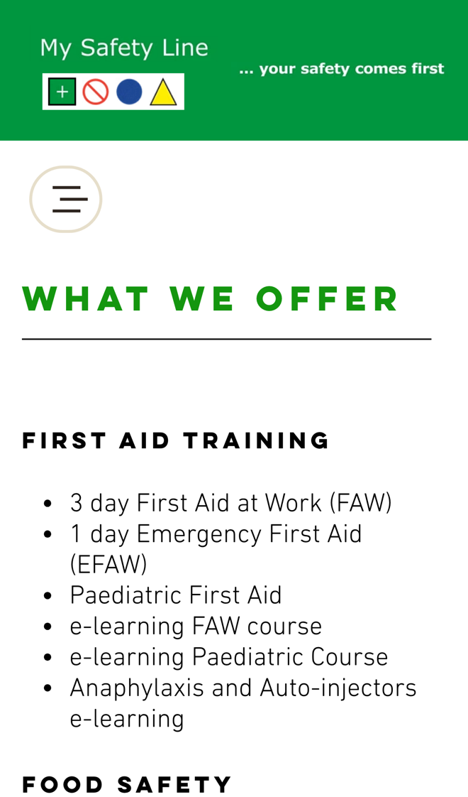

My Safety Line: from course list to booked place, faster
I went through your website on a phone, the way an employer needing first aid or food safety training would, and read your homepage, course list, contact page and learner feedback. Your promise that "we won't sell you anything you don't need" comes across well. Where I think you'd win more bookings, and save time, is in how people get from your course list to a booked place.
What's already working
Three things I'd change
Sell your e-learning courses online
Your course list includes the "e-learning FAW course", "e-learning Paediatric Course", "Anaphylaxis and Auto-injectors e-learning" and "Asbestos Awareness e-learning", but there's no price or way to buy them. The next step is to phone or email.

E-learning is the one thing a customer could buy and start tonight. Asking them to ring or email first turns a quick sale into a conversation, and some will buy from a provider that lets them pay there and then.
- Each e-learning course gets its own page with the price and a Buy button.
- They pay by card and get their login straight away, at any time of day.
- Employers buying for several staff add the names in one go, and you get one tidy order.
Give group quotes from a short form
Your course list shows no dates or prices for courses like the "3 day First Aid at Work (FAW)" or "Food Safety Level 2". The way to ask is your contact form (name, email, subject, message) or a call to 01978 860024.
An employer needing several staff trained often asks more than one provider at once. Whoever sends a clear price first has the head start.
- The form asks which course, how many staff, and where they'd like it run.
- It shows a guide price from your own rates and lets them suggest dates.
- You get the request with everything you need to confirm it in one reply.
Catch calls while you're teaching
You're "a small but experienced team" who "NEVER subcontract work", so your own trainers run every course, and enquiries come to one number, 01978 860024.
When you're running a course all day, the phone can't be answered, and an employer who needs training booked may ring the next provider.
- A missed call gets a text back within a minute: sorry we missed you, we're running a course.
- The text links to your course list and lets them ask for a quote or a call back.
- At the end of the day you see every missed caller in one list, with what they wanted.
Your website, answering for you
An assistant that answers the questions you get asked again and again, at any hour. These answers come only from your own website: your homepage, course list and contact page.
Anything it can't answer, it passes to you with the customer's details.
What happens next
For five local businesses I'm setting up one of these for free, in return for an honest review. Pick whichever would help most.
I'm Tom Williams and I run Tomoni-AI. If a 20-minute chat would help, reply to my email or give me a ring.
Call 07971 512158Email Tom